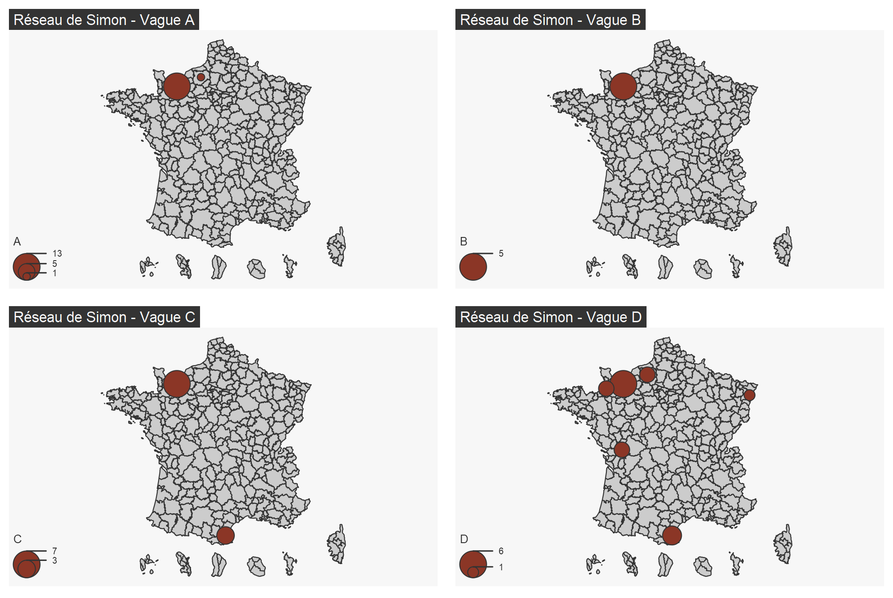

Cette étude s’intéresse à l’évolution des réseaux sociaux en fonction de la mobilité spatiale et temporelle. L’objectif est d’analyser comment les changements d’environnement (déménagements, mutations professionnelles, mobilités étudiantes) influencent la structure des réseaux sociaux et les interactions entre individus.
igraph et sf pour l’analyse spatiale).Quelques représentations illustrant les évolutions des réseaux :
Graphique 1 : Analyse des dynamiques des réseaux du Panel de Caen – Régression linéaire et cluster.
Graphique 2 : Représentation des réseaux de Simon lors des vagues A, B, C et D.
Cette étude met en évidence l’impact de la mobilité sur la transformation des réseaux sociaux. Les liens forts restent généralement stables malgré l’éloignement, mais les relations périphériques sont plus sujettes à des modifications. La réduction progressive de l’ancrage local suggère une tendance vers des réseaux plus larges et moins dépendants d’un territoire spécifique. Une perspective complémentaire pourrait analyser l’impact des technologies numériques dans le maintien des liens sociaux à distance.